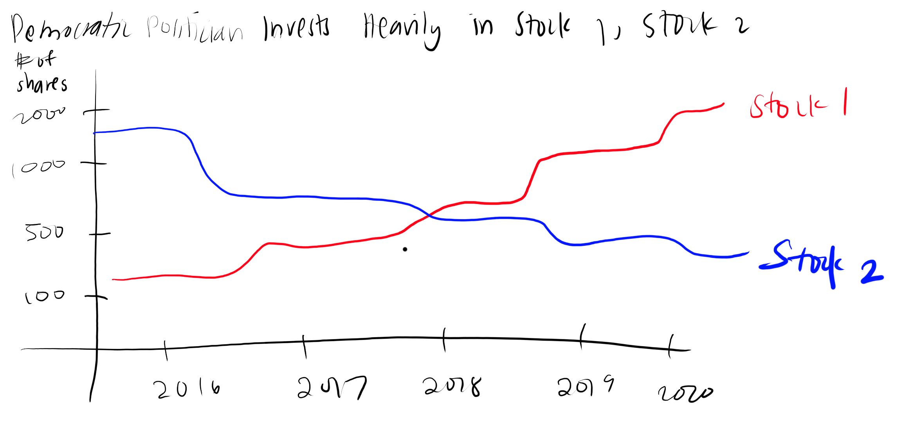
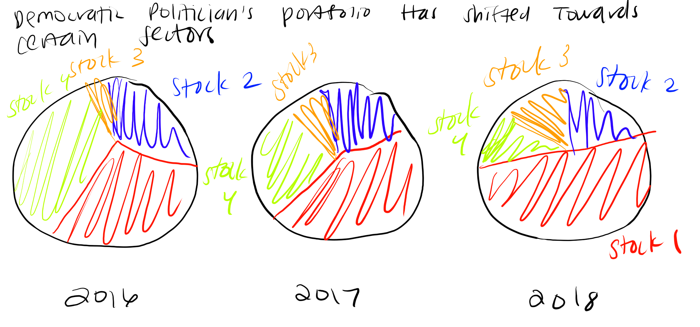
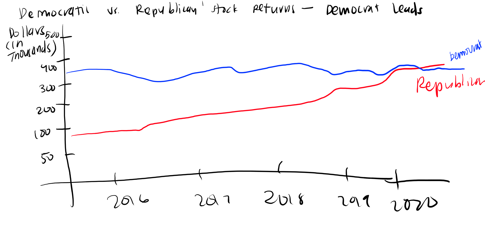
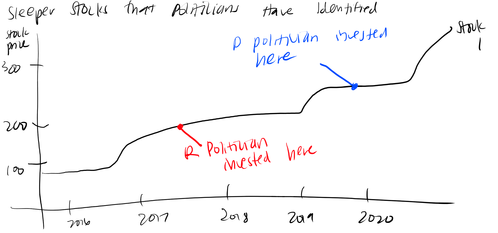

Much discussion has been made over Nancy Pelosi's investments and stock portfolio, especially in relation to how the stock market actually performs. I'm interested in comparing other politician's investments relative to market performance as a whole, and shed some light on key members of certain Congressional committees and their investments. For my initial project, I'm interested in identifying a high profile Democrat and Republican politican to analyze.
I envision my project structure to be as follows:
Introduction to Stocks and Politician Investing
I want to speak to some of the background on stocks, how they are bought and sold, and the history of politican investment as well as regulation into these stock investments.
Identifying the Stock Investments of a Democratic Politician
Then I plan on identifying the main aspects of a Democratic politician's portfolio, including look at ther sectors and individual stocks that they've invested in.
Visualization: Democratic Politician Invests Heavily in Stock 1, Stock 2
Visualization: Democratic Politician's Portfolio Has Shifted More Towards Certain Sectors
Identifying the Stock Investments of a Republican Politician
I also plan on identifying the main aspects of a Republican politician's portfolio, including look at ther sectors and individual stocks that they've invested in.
Visualization: Republican Politician Invests Heavily in Stock 1, Stock 2
Visualization: Republican Politician's Portfolio Has Shifted More Towards Certain Sectors
Analyzing the Returns of Politicians
The returns of politicians are also important to point out, including comparing politicians and identifying sleeper stocks that politicians have invested in that add to the narrative of politician's ability to be on top of the stock market.
Visualization: Democractic vs. Republican Stock Returns
Visualization: Sleeper Stocks that Politicans Have Identified
For my sketches, I sketched out some of the basic visualizations that I plan on incorporating. I used the Democratic politican for these examples but I would do similar visualizations for the Republican politician and potentially involve more comparisons along the same lines. I also wanted to identify a few other aspects of my story, including the sleeper stocks and comparison of performance for the different investments.
Visualization: Democratic Politician Invests Heavily in Stock 1, Stock 2
Visualization: Democratic Politician's Portfolio Has Shifted More Towards Certain Sectors
Visualization: Democractic vs. Republican Stock Returns
Visualization: Sleeper Stocks that Politicans Have Identified
The datasets I plan to use are the Capitol Trades dataset of what stocks politicans invest in and NASDAQ data on stock prices.
My datasets are the Capitol Trades and the NASDAQ datasets, and I plan on using them in order to show how the stock price changes and what stocks are politicans investing in. This data would allow me to show how these different factors interact and what aspects of stock investing are important to keep an eye on in terms of the implications of stock investing by politicans and the potential of what kind of information they might have.
I will be using Shorthand to complete my project, as I want to be able to combine the visual aspects and my analysis through this platform. By using a combination of the visualizations that I create and specific headers for my analysis, I want to use Shorthand in order to organize my data story into a chronological story in order to showcase how the data develops over the course of my visualizations.
I also think it's important to fully utilize Shorthand by including animations, transitions, and other ways for people to able to have some interactivity with the platform. I want to be able to incorporate those aspects in order to make the platform more engaging as people are exploring the data visualizations.
The first part of this is my outline including the wireframes / draft visualizations that I want to include for the final project as well as a storyboard that gives a narrative and structure to my visualizations. I also included some of the text and research that I wanted to put to give greater context for the story and the visualizations shown. This storyboard will serve as a precursor to my Shorthand project.
First: a primer on the stock market, its importance to American politics and the economy, and how it works. According to James Chen of Investopedia, the stock market "broadly refers to the collection of exchanges and other venues where the buying, selling, and issuance of shares of publicly held companies take place." There are two leading US stock exchanges: the New York Stock Exchange (NYSE) and the NASDAQ. These along with the other exchanges make up the stock market, and people can trade on multiple exchanges. Ultimately, as Chen explains, "stock markets are vital components of a free-market economy because they enable democratized access to trading and exchange of capital for investors of all kinds" (Chen).
One key aspect of understanding the performance of the stock market lies in the indicators that map its performance. Some examples of indicators include the DOW, NASDAQ, and S&P 500 indicators. The S&P 500 serves as a weighted index of the top 500 publicly listed stocks in the US and measures overall performance of the market (DataHub). The overall performance of the market has historically been shown to react to current events that could potentially impact the earnings of top companies.
According to the SEC, insider trading refers to buying or selling a stock "while in possession of material, nonpublic information" related to the stock or company.
Most government employees do not have restrictions on trading stocks. However, there are some exceptions. Federal Reserve officials are banned from trading stocks or cryptocurrencies (Cox). For lawmakers in Congress, the STOCK Act passed in 2012 bans them from trading stocks on private information and requires disclosure of their trades within 45 days.
Public accountability and pressure can create change. The less the US government mixes money and politics, the more sure we can be that lawmakers are acting in the public's best interest.
If you have the ability to vote, vote, especially for your House District representative. Find out a politician's stance on heavier regulations on trading stocks by lawmakers.
Chen, J. (2022, February 17). Stock market. Investopedia. Retrieved from https://www.investopedia.com/terms/s/stockmarket.asp
Cox, J. (2022, February 19). Fed approves rules banning its officials from trading stocks, bonds and also cryptocurrencies. CNBC. Retrieved from https://www.cnbc.com/2022/02/18/fed-approves-rules-banning-its-officials-from-trading-stocks-bonds-and-also-cryptocurrencies.html
DataHub. (n.d.). Standard and poor's (S&P) 500 index data including dividend, earnings and P/E ratio. DataHub. Retrieved from https://datahub.io/core/s-and-p-500
Evers-Hillstrom, K. (2022, January 6). Three in four voters support banning lawmakers from trading stocks: Poll. TheHill. Retrieved from https://thehill.com/homenews/news/588630-76-percent-of-voters-support-banning-lawmakers-from-trading-stocks-poll
Lane, S. (2020, March 20). Four senators sold stocks before Coronavirus Threat Crashed market. TheHill. Retrieved from https://thehill.com/homenews/senate/488593-four-senators-sold-stocks-before-coronavirus-threat-crashed-market
SEC. (n.d.). 2013 INSIDER TRADING POLICY. Sec.gov. Retrieved from https://www.sec.gov/Archives/edgar/data/25743/000138713113000737/ex14_02.htm
The Washington Post. (2021, December 31). Opinion | Pelosi said it's fine for lawmakers to trade stocks. She's wrong. The Washington Post. Retrieved from https://www.washingtonpost.com/opinions/2021/12/21/nancy-pelosi-wrong-lawmakers-trade-stocks/
This section outlines my approach to user research interviews and consolidating the feedback from my interviews into actionable next steps.
When I was thinking about my target audience, one of the key factors I was thinking about was demographic groups that are statistically less involved in politics than other groups. Thus, I chose young people, specifically people between the ages of 18 and 24. These people are voting age which is important for my call to action but are also part of the age group that has historically shown lower voter turnout percentages than other age groups (Tufts). I also in part thought that this age group would be a good choice because I have a lot of access to people in this age group (CMU students) and would be able to identify a greater variety of perspectives and backgrounds within my age constraints.
When it came to identifying representative individuals, I knew that I wanted to have a variety of individuals that fell within my age constraints. Specifically, I wanted to have people who had different levels of political literacy. I also wanted to keep in mind that my story is pretty US centric, and so I prioritized finding American citizens since I wanted to know about the efficacy of call to action towards people who have the ability vote. In order to assess people's political literacy, I asked a few questions:
1. How much do you follow current events involving the US government or politics?
2. Have you taken any government or political science classes at CMU or elsewhere? Which ones?
3. Did you vote in the 2020 election? If you were eligible to vote before then, did you?
From these questions I assigned each a person to either not politically literate, somewhat politically literate, and very politically literate. The individuals I identified as my interview subject were as follows:
Individual 1: 21 year old college student
- She said she follows current events daily or almost daily.
- She has taken two courses at CMU about government and politics.
- She voted in the 2020 election. That was the first year she was eligible to vote.
Individual 2: 20 year old college student
- He said he reads news articles about current events about once a week.
- He has taken no courses at CMU about government and politics, but wants to take one eventually.
- He did not vote in the 2020 election. That was the first year he was eligible to vote.
Individual 3: 20 year old college student
- She says she never follows current events. Her knowledge mostly comes from friends or social media platforms like Twitter.
- She has not taken any courses at CMU about government and politics.
- She did not vote in the 2020 election. That was the first year she was eligible to vote.
With these 3 individuals representing different levels of political awareness, I felt that I would have a representative sample of the target audience I was aiming for.
Initial Questions and Context
First, I will confirm the information from my previous three questions about their political activity. Then I will explain the purpose of my interview: "Today I am going to be showing you a series of data visualizations, and I want your feedback on my visualizations as well as the narrative that I'm aiming for. There are no wrong anwers, I'm just interested in knowing what intrigues you, what is confusing, and any other thoughts."
Interview
I will then direct them to my storyboard and wireframes and ask them to scroll through the text and visualizations. They can either make note of anything that comes up on a separate paper or can mention it to me in real time. In that case, I might ask follow up questions like:
What aspect of this visualization do you think specifically confused you?
What do you think the main takeaway of this data story is?
Do you think the visualizations you saw connect to the takeaway?
Why is this visualization your favorite? Your least favorite?
I will also pick some of the visualizations and ask them to explain what they think the purpose of the visualization is in the best way they can.
- Based off the title, Individual 1 was already familiar with the issue of Congress and insider trading as it has been in the news
- She mentioned that she wanted more context for the first S&P 500 graph and that it "maybe looks a bit cluttered with all the dates."
- She liked the pie charts and that they were color coded according to political party as it helped make things clearer.
- She found the chart about lawmakers selling off stocks a little hard to comprehend at first because "I skipped over the legend and couldn't figure out what the numbers were." She specifically mentioned the x-axis as being confusing at first glance because of the lack of labeling.
- He said he was fairly familiar with the stock market but thought the beginning background section would be good for people who are unfamiliar.
- He thought the S&P 500 graph "was kinda random" with the line designating the start of COVID since it wasn't mentioned anywhere else.
- He mentioned a few charts that could have less labels, including the Total Volume chart and was confused by the STOCK Act penalties graph since he wasn't sure what he was supposed to take away from it.
- He liked that the call to action was easy to understand.
- She thought the explanations of the stock market and S&P 500 were interesting but wasn't as clear on the S&P 500 graph.
- She wanted more text and titles to help transition from visualization to visualization, and she didn't like that everything was phrased as questions. She said, "I'm not really seeing what I'm supposed to learn when everything is a question."
- She thought that the Senator Burr case study visualization was easy to understand than the STOCK Act one since she wasn't super familiar with why the STOCK Act mattered in this story.
From my interview findings, I've identified the 3 main areas of improvement as visualization design choices, accompanying text, and narrative structure / transitions.
For visualization design choices, there are a few visualizations that were brought up among the different individuals I interviewed, so I am prioritizing those for my changes. In particular, the S&P 500 graph could be simplified in terms of its labeling, as Individuals 1, 2, and 3 mentioned that. Also, charts like Total Volume and the lawmakers selling off stocks came up with multiple people. I want to test if a vertical bar chart might be more intuitive for this purpose, or if I should just get rid of the x axis labels. Finally, I definitely want to tackle the STOCK Act penalties graph after hearing the feedback that it wasn't the most clear. I think that cleaning up all of the categories (and perhaps putting them into broader categories that will illustrate my point more simply) will definitely make the chart more clear.
For the accompanying text, all three individuals wanted more context for the S&P 500 so I am prioritizing that. I also want to write a little more about the case study to give better context as well as the end call to action section. These aspects were in part because of the response I got from my interviews and also because seeing someone else go through my data story made me realize there are some key points missing when they were going through the case study.
Finally, the transition aspect came up in all my interviews as well. I want to change some of the question headings into more definitive statements to help guide the reader and create a more cohesive narrative.
Going into the final iteration of the project, I had a pretty good idea of what kinds of changes I wanted to make based off of my user interviews. I spent some more time thinking about how I could appeal to different kinds of young voters, especially people who might not have as much political knowledge. I decided that I wanted to focus more on a simple narrative for my story in order to appeal to an audience that might be less interested in the nitty gritty details of every single trade a politician has undertaken. I also wanted to create some appeal to the majority by illustrating how popular of an opinion it is to want to further regulate Congress members trading stocks.
In terms of specific changes I made, I first made changes to some of my visualizations. I changed the title of the S&P 500 graph so that it was clearer in its meaning and limited the scale of my y-axis more so that the trends were easier to see. For the Total Volume chart, I eliminated the x-axis ticks entirely because the labels on the bars of the bar chart were very clear and the scale didn't contribute to the meaning of the graph. This was part of my goal to make my charts less busy where possible as some of my interviewees mentioned preferring less cluttered visuals. I also revamped the STOCK Act chart a lot. I identified that the overly varied color scheme was causing visual confusion, and the groupings of the categories were also confusing. I simplified the color scheme to a gray and green color scheme to emphasize my most important point, which was focusing on the members that showed a proof of a fine after their violation. I also grouped some of the extra categories together because they weren't enhancing the core meaning of the chart. Finally, because my interviewees mentioned clearer charts and less busyness, I eliminated the x-axis of the Lawmakers Sell Off Stocks chart and kept the labels only.
The other major change I made was introducing more context and transitions between my data visualizations. I added some key statements, including summarizing the impact of COVID on the market, defining insider trading, and introducing the case study of pre-pandemic trading by senators. I wanted to have clearer delineations between emphasized text and paragraphs in order to help with the flow of big ideas. I also added some more text and actionables to my call to action section, including adding links so people could find out who their district representative is and get more information on Congress member's trading behaviors through online trackers. This was in an effort to inspire action, even if it's as small as clicking a link, for my audience since I know they are digital natives.
Ultimately, I learned a lot throughout this process. It was really interesting to be able to see people interacting with my visualizations and story in real time, and that was really helpful when I was thinking about the changes that I wanted to make. I felt good about making design and content changes in response to real people's reactions. I think when it comes to data and stories, it is really important to consider that your audience will be people and to keep their behaviors in mind.